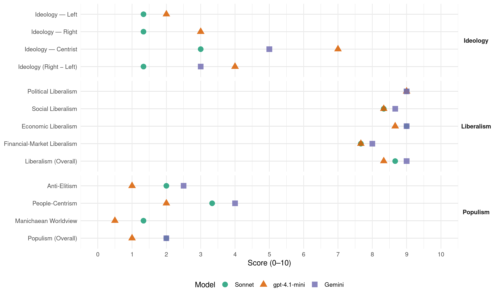

FDP (Germany, 2009)
manifesto_id 41420_200909
Get full text: This site shows derived annotations and short verbatim quotes only. The full manifesto text is © Manifesto Project / WZB — obtain it via manifesto-project.wzb.eu using the manifesto_id above.
Headline scores
| Dimension | Sonnet | gpt-4.1-mini | Gemini |
|---|---|---|---|
| Populism (Overall) | 2.0 | 1.0 | 2.0 |
| Anti-Elitism | 2.0 | 1.0 | 2.5 |
| People-Centrism | 3.3 | 2.0 | 4.0 |
| Manichaean Worldview | 1.3 | 0.5 | – |
| Ideology (Right − Left) | 1.3 | 4.0 | 3.0 |
| Liberalism (Overall) | 8.7 | 8.3 | 9.0 |
| Political Liberalism | 9.0 | 9.0 | 9.0 |
| Social Liberalism | 8.3 | 8.3 | 8.7 |
| Economic Liberalism | 9.0 | 8.7 | 9.0 |
| Financial-Market Liberalism | 7.7 | 7.7 | 8.0 |
Evidence per dimension
Economic Liberalism
Gemini · score 9.0 · verified · chunk 1
“Soziale Marktwirtschaft am besten”
gezeigt, dass die Soziale Marktwirtschaft am besten dauerhaften Wohlstand
Gemini · score 9.0 · verified · chunk 2
“Wettbewerb ist Grundlage für Investitionen und Innovationen”
Infrastrukturen der Telekommunikation und den flächendeckenden Zugang zu Breitband-Internet. Staatliche Regulierung muss dabei stets der Förderung des Wettbewerbs dienen, denn Wettbewerb ist Grundlage für Investitionen und Innovationen bei Infrastrukturen und Diensten. Der Zugang zu
Gemini · score 9.0 · verified · chunk 3
“Wettbewerb auf den Energiemärkten. Dazu”
grenzüberschreitenden Stromwettbewerb zugunsten der Verbraucher zu ermöglichen. Wir wollen Wettbewerb auf den Energiemärkten. Dazu muss die heute
gpt-4.1-mini · score 9.0 · verified · chunk 1
“Unsere wirtschaftspolitische Leitlinie ist die Soziale Marktwirtschaft. Sie greift weit über ökonomische Ziele hinaus”
Unsere wirtschaftspolitische Leitlinie ist die Soziale Marktwirtschaft. Sie greift weit über ökonomische Ziele hinaus, ist ein unverzichtbarer Teil einer freiheitlichen offenen Gesellschaft. Wir Liberale achten, schützen und verteidigen die Wirtschaftsordnung der Sozialen Marktwirtschaft mit aller Kraft.
gpt-4.1-mini · score 8.0 · verified · chunk 2
“Die FDP will Wettbewerb auf den Energiemärkten. Dazu muss die heute auf nur vier Unternehmen konzentrierte Herrschaft über die Energieerzeugung aufgebrochen werden”
…Energie sicher und bezahlbar halten Deutschland braucht ein konsistentes Energiekonzept, das unsere Energieversorgung umweltfreundlich, sicher und bezahlbar macht. Mobilität und Heizen darf kein Luxusgut sein. Steigende Preise sind in einer Marktwirtschaft bei steigenden Knappheiten unvermeidlich. Aber: Der Staat ist der größte Preistreiber bei den Energiekosten. Wir fordern daher eine spürbare Entlastung aller Bürger von hohen Energiekosten. Die FDP will Wettbewerb auf den Energiemärkten. Dazu muss die heute auf nur vier Unternehmen konzentrierte Herrschaft über die Energieerzeugung aufgebrochen werden….
gpt-4.1-mini · score 9.0 · verified · chunk 3
“Wir stehen für die Soziale Marktwirtschaft. Sie ist die erfolgreichste Gesellschafts- und Wirtschaftsordnung, die es je gab.”
Wir stehen für die Soziale Marktwirtschaft. Sie ist die erfolgreichste Gesellschafts- und Wirtschaftsordnung, die es je gab. Wir wollen einen politischen Rahmen, der Innovation und Wachstum fördert. Wir stehen für Bürgerrechte. Freiheit ist unser höchstes Gut – mit Blick auf den Einzelnen wie auf die Gesellschaft.
Sonnet · score 9.0 · verified · chunk 1
“Wettbewerb mit klaren Regeln ist das Leitmotiv”
Die FDP spricht sich für klare Regeln in allen Branchen aus: Wettbewerb mit klaren Regeln ist das Leitmotiv liberaler Wirtschaftspolitik.
Sonnet · score 9.0 · verified · chunk 2
“Wettbewerb auf den Energiemärkten”
Wir wollen Wettbewerb auf den Energiemärkten. Dazu muss die heute auf nur vier Unternehmen konzentrierte Herrschaft über die Energieerzeugung aufgebrochen werden.
Sonnet · score 9.0 · verified · chunk 3
“Soziale Marktwirtschaft statt auf bürokratische Staatswirtschaft”
Wir setzen auf Soziale Marktwirtschaft statt auf bürokratische Staatswirtschaft. Wir setzen auf Freiheit statt auf Überwachung.
Financial-Market Liberalism
Gemini · score 8.0 · verified · chunk 1
“Wettbewerb auf dem Finanzmarkt”
einen funktionsfähigen Wettbewerb auf dem Finanzmarkt durchsetzen Die
Gemini · score 8.0 · verified · chunk 2
“Erleichterungen für Wagniskapitalgeber (Private-Equity-Gesetz) durchsetzen”
Hauptproblem für junge Forscher und Unternehmensgründer ist der Mangel an Wagniskapital. Instrumente wie der High-Tech-Gründerfonds haben noch nicht genügend Unterstützter aus der Wirtschaft. Wir wollen Erleichterungen für Wagniskapitalgeber (Private-Equity-Gesetz) durchsetzen und das Stiftungsrecht vereinfachen. Wir brauchen
Gemini · score 8.0 · verified · chunk 3
“Erleichterungen für Wagniskapitalgeber (Private-Equity-Gesetz)”
noch nicht genügend Unterstützter aus der Wirtschaft. Wir wollen Erleichterungen für Wagniskapitalgeber (Private-Equity-Gesetz) durchsetzen und das Stiftungsrecht
gpt-4.1-mini · score 8.0 · verified · chunk 1
“Ziel jeder Regulierung am Finanzmarkt muss ein funktionsfähiger Wettbewerb sein. Die Marktteilnehmer müssen Vertrauen in das System haben können.”
Ziel jeder Regulierung am Finanzmarkt muss ein funktionsfähiger Wettbewerb sein. Die Marktteilnehmer müssen Vertrauen in das System haben können. Dieses Vertrauen ist derzeit verloren gegangen. Wir brauchen nicht mehr, sondern bessere Regelungen für den Finanzmarkt.
gpt-4.1-mini · score 7.0 · verified · chunk 2
“Die FDP fordert die Wiederherstellung des Bankgeheimnisses durch die Abschaffung der Vorratsdatenspeicherung”
…Die FDP fordert die Wiederherstellung des Bankgeheimnisses durch die Abschaffung der Vorratsdatenspeicherung und den Verzicht auf heimliche Online-Durchsuchungen privater Computer. Zudem ist der Staat aufgerufen, gegen Computerkriminalität zielgerichteter vorzugehen….
gpt-4.1-mini · score 8.0 · verified · chunk 3
“Wir stehen deshalb mit Nachdruck für eine einheitliche EU-weite Bankenaufsicht ein, die bei der Europäischen Zentralbank (EZB) anzusiedeln ist.”
Für uns Liberale ist die Stabilität des Erfolgsmodells „Euro“ ein Garant für den wirtschaftlichen Erfolg Deutschlands und Europas. Ohne den Euro hätte sich die Finanzkrise in Europa noch sehr viel schlimmer niedergeschlagen. Wir stehen deshalb mit Nachdruck für eine einheitliche EU-weite Bankenaufsicht ein, die bei der Europäischen Zentralbank (EZB) anzusiedeln ist.
Sonnet · score 7.0 · verified · chunk 1
“funktionsfähiger Wettbewerb auf dem Finanzmarkt”
Jetzt einen funktionsfähigen Wettbewerb auf dem Finanzmarkt durchsetzen. Ziel jeder Regulierung am Finanzmarkt muss ein funktionsfähiger Wettbewerb sein.
Sonnet · score 8.0 · verified · chunk 2
“Erleichterungen für Wagniskapitalgeber”
Wir wollen Erleichterungen für Wagniskapitalgeber (Private-Equity-Gesetz) durchsetzen und das Stiftungsrecht vereinfachen.
Sonnet · score 8.0 · verified · chunk 3
“Produktwahrheit, Produktklarheit und Risikotransparenz als Mindestanforderungen an Finanzprodukte”
Wir brauchen mehr Produktwahrheit, Produktklarheit und Risikotransparenz als Mindestanforderungen an Finanzprodukte und Beratung. Banken und Finanzvermittler müssen für die Risikoeinstufung ihrer Kunden und ihrer Produkte einstehen.
Political Liberalism
Gemini · score 9.0 · verified · chunk 1
“Achtung der Grundrechte”
Voraussetzung für eine Achtung der Grundrechte. Welche Sicherheitsbehörde
Gemini · score 9.0 · verified · chunk 2
“Schutz der verfassungsmäßigen Ordnung und der Grundrechte”
Leitbild liberaler Sicherheitspolitik ist der Schutz der verfassungsmäßigen Ordnung und der Grundrechte. Sicherheit entsteht auch durch Vertrauen in die
Gemini · score 9.0 · verified · chunk 3
“Rechtsstaatlichkeit, Demokratie und Soziale Marktwirtschaft”
Die besten Garanten für Frieden und Freiheit sind Rechtsstaatlichkeit, Demokratie und Soziale Marktwirtschaft. Es sind diese
gpt-4.1-mini · score 9.0 · verified · chunk 1
“Die FDP ist die Partei der Grundrechte und des Rechtsstaats. Sie verteidigt die Freiheitsrechte der Bürger gegen staatliche Bevormundung”
Die FDP ist die Partei der Grundrechte und des Rechtsstaats. Sie verteidigt die Freiheitsrechte der Bürger gegen staatliche Bevormundung und gesellschaftliche Einschränkungen.
gpt-4.1-mini · score 9.0 · verified · chunk 2
“Die FDP fordert, eine parlamentarische Aufsicht zu gewährleisten”
…Die FDP fordert, eine Zusammenarbeit der Sicherheitsbehörden über Indexdateien statt über Volltextdateien zu realisieren und eine parlamentarische Aufsicht zu gewährleisten. Den Umbau des Bundeskriminalamtes (BKA) zu einem deutschen FBI lehnt die FDP ab….
gpt-4.1-mini · score 9.0 · verified · chunk 3
“Die besten Garanten für Frieden und Freiheit sind Rechtsstaatlichkeit, Demokratie und Soziale Marktwirtschaft.”
Wo Frieden und Freiheit nicht garantiert sind, ist jeder einzelne Mensch am Ende der Willkür anderer ausgesetzt. Die besten Garanten für Frieden und Freiheit sind Rechtsstaatlichkeit, Demokratie und Soziale Marktwirtschaft. Es sind diese Prinzipien, die gleichzeitig Menschenrechte garantieren und die Voraussetzungen für Stabilität, Wohlstand und Toleranz bilden.
Sonnet · score 9.0 · verified · chunk 1
“Partei der Grundrechte und des Rechtsstaats”
Die FDP ist die Partei der Grundrechte und des Rechtsstaats. Sie verteidigt die Freiheitsrechte der Bürger gegen staatliche Bevormundung.
Sonnet · score 9.0 · verified · chunk 2
“Schutz der verfassungsmäßigen Ordnung und der Grundrechte”
Leitbild liberaler Sicherheitspolitik ist der Schutz der verfassungsmäßigen Ordnung und der Grundrechte.
Sonnet · score 9.0 · verified · chunk 3
“Stärkung des Europäischen Parlaments, mehr Transparenz und Bürgerbeteiligung”
Für uns entscheidende Reformelemente sind eine erhebliche Stärkung des Europäischen Parlaments, mehr Transparenz und Bürgerbeteiligung, eine Stärkung des Subsidiaritätsprinzips
Liberalism (Overall)
Gemini · score 9.0 · verified · chunk 1
“Soziale Marktwirtschaft am besten”
gezeigt, dass die Soziale Marktwirtschaft am besten dauerhaften Wohlstand
Gemini · score 9.0 · verified · chunk 2
“Schutz der verfassungsmäßigen Ordnung und der Grundrechte”
Leitbild liberaler Sicherheitspolitik ist der Schutz der verfassungsmäßigen Ordnung und der Grundrechte. Sicherheit entsteht auch durch Vertrauen in die
Gemini · score 9.0 · verified · chunk 3
“Rechtsstaatlichkeit, Demokratie und Soziale Marktwirtschaft”
Die besten Garanten für Frieden und Freiheit sind Rechtsstaatlichkeit, Demokratie und Soziale Marktwirtschaft. Es sind diese
gpt-4.1-mini · score 8.0 · verified · chunk 1
“Unsere wirtschaftspolitische Leitlinie ist die Soziale Marktwirtschaft. Sie greift weit über ökonomische Ziele hinaus”
Unsere wirtschaftspolitische Leitlinie ist die Soziale Marktwirtschaft. Sie greift weit über ökonomische Ziele hinaus, ist ein unverzichtbarer Teil einer freiheitlichen offenen Gesellschaft. Wir Liberale achten, schützen und verteidigen die Wirtschaftsordnung der Sozialen Marktwirtschaft mit aller Kraft.
gpt-4.1-mini · score 8.0 · verified · chunk 2
“Die FDP fordert, eine parlamentarische Aufsicht zu gewährleisten”
…Die FDP fordert, eine Zusammenarbeit der Sicherheitsbehörden über Indexdateien statt über Volltextdateien zu realisieren und eine parlamentarische Aufsicht zu gewährleisten. Den Umbau des Bundeskriminalamtes (BKA) zu einem deutschen FBI lehnt die FDP ab….
gpt-4.1-mini · score 9.0 · verified · chunk 3
“Wir stehen für die Soziale Marktwirtschaft. Sie ist die erfolgreichste Gesellschafts- und Wirtschaftsordnung, die es je gab.”
Wir stehen für die Soziale Marktwirtschaft. Sie ist die erfolgreichste Gesellschafts- und Wirtschaftsordnung, die es je gab. Wir wollen einen politischen Rahmen, der Innovation und Wachstum fördert. Wir stehen für Bürgerrechte. Freiheit ist unser höchstes Gut – mit Blick auf den Einzelnen wie auf die Gesellschaft.
Sonnet · score 8.0 · verified · chunk 1
“Freiheit vor Gleichheit, Erwirtschaften vor Verteilen”
Wir wollen die Maßstäbe politischen Handelns neu definieren: Freiheit vor Gleichheit, Erwirtschaften vor Verteilen, Privat vor Staat.
Sonnet · score 9.0 · verified · chunk 2
“Mehr Freiheit wagen”
Staat und Gesellschaft: Mehr Freiheit wagen. Demokratie lebt von der Teilhabe der Bürger am Geschehen in Gesellschaft und Staat.
Sonnet · score 9.0 · verified · chunk 3
“Rechtsstaatlichkeit, Demokratie und Soziale Marktwirtschaft”
Die besten Garanten für Frieden und Freiheit sind Rechtsstaatlichkeit, Demokratie und Soziale Marktwirtschaft. Es sind diese Prinzipien, die gleichzeitig Menschenrechte garantieren
Anti-Elitism
Gemini · score 3.0 · verified · chunk 1
“bevormundende Staatsbürokratie”
brauchen dafür keine bevormundende Staatsbürokratie. Die FDP ist
Gemini · score 2.0 · verified · chunk 3
“Widerstand nationaler Eliten, die oft”
Erfolglosigkeit politischer Reformen ist der Widerstand nationaler Eliten, die oft zu den Nutznießern undemokratischer
gpt-4.1-mini · score 2.0 · verified · chunk 1
“Die FDP ist der Anwalt der Mitte der Gesellschaft. Die Mitte steht gegen Extreme”
Die FDP ist der Anwalt der Mitte der Gesellschaft. Die Mitte steht gegen Extreme, aber sie ist mehr als etwas zwischen links und rechts. Sie ist vor allem eines: eine Grundhaltung.
gpt-4.1-mini · score 0.0 · verified · chunk 2
“Politische Kontroversen dürfen nicht populistisch verpackt werden”
…die Grundrechte und den Rechtsstaat in Frage. Beide behaupten, im Besitz letzter Wahrheit zu sein und lehnen das demokratische Ringen um die richtigen Antworten ab. Politische Kontroversen dürfen nicht populistisch verpackt werden, genauso wenig wie Ressentiments gegen Minderheiten aus der Mitte der Gesellschaft befördert werden dürfen. Gleichzeitig plädieren wir für differenzierte Strategien….
Sonnet · score 2.0 · verified · chunk 1
“bürokratischen Auswüchse des sozialdemokratischen Wohlfahrtsstaates”
Wir setzen Eigenverantwortung gegen die Bevormundung durch die bürokratischen Auswüchse des sozialdemokratischen Wohlfahrtsstaates.
Sonnet · score 2.0 · verified · chunk 2
“nur vier Unternehmen konzentrierte Herrschaft”
Dazu muss die heute auf nur vier Unternehmen konzentrierte Herrschaft über die Energieerzeugung aufgebrochen werden.
Sonnet · score 2.0 · verified · chunk 3
“nationaler Eliten, die oft zu den Nutznießern”
Eine Hauptursache für die Armut und für die Erfolglosigkeit politischer Reformen ist der Widerstand nationaler Eliten, die oft zu den Nutznießern undemokratischer Strukturen
Ideology — Centrist
Gemini · score 5.0 · verified · chunk 1
“Die Mitte der Gesellschaft”
ist der Anwalt der Mitte der Gesellschaft. Die Mitte steht
gpt-4.1-mini · score 7.0 · verified · chunk 1
“Die FDP ist der Anwalt der Mitte der Gesellschaft. Die Mitte steht gegen Extreme, aber sie ist mehr als etwas zwischen links und rechts.”
Die FDP ist der Anwalt der Mitte der Gesellschaft. Die Mitte steht gegen Extreme, aber sie ist mehr als etwas zwischen links und rechts. Sie ist vor allem eines: eine Grundhaltung.
gpt-4.1-mini · score 7.0 · verified · chunk 2
“Die FDP bekennt sich zur repräsentativen Demokratie. Sie will diese aber um Elemente der direkten Demokratie bereichern”
…Staat und Gesellschaft: Mehr Freiheit wagen Demokratie lebt von der Teilhabe der Bürger am Geschehen in Gesellschaft und Staat. Die FDP will mehr Freiheit wagen, indem mehr Menschen an der Gestaltung des Gemeinwesens mitwirken können. Die FDP bekennt sich zur repräsentativen Demokratie. Sie will diese aber um Elemente der direkten Demokratie bereichern. Der Bürger muss sich besonders in seinem unmittelbaren Umfeld stärker an Entscheidungen beteiligen können….
Sonnet · score 5.0 · verified · chunk 1
“Die Mitte stärken”
Die Mitte stärken. Deutschlandprogramm 2009 Programm der Freien Demokratischen Partei zur Bundestagswahl 2009.
Sonnet · score 2.0 · verified · chunk 2
“liberale Gesellschaft fragt nicht danach”
Eine liberale Gesellschaft fragt nicht danach, was die Eltern sind, sondern danach, was die Kinder können.
Sonnet · score 2.0 · verified · chunk 3
“Wir wollen die Mitte unserer Gesellschaft stärken”
Das Wohl der Menschen ist Maßstab unserer Politik. Wir wollen die Mitte unserer Gesellschaft stärken, damit sich Leistung wieder lohnt.
Ideology — Left
gpt-4.1-mini · score 2.0 · verified · chunk 1
“Wir setzen Eigenverantwortung gegen die Bevormundung durch die bürokratischen Auswüchse des sozialdemokratischen Wohlfahrtsstaates.”
Wir setzen Eigenverantwortung gegen die Bevormundung durch die bürokratischen Auswüchse des sozialdemokratischen Wohlfahrtsstaates. Wir sind für den liberalen Sozialstaat.
gpt-4.1-mini · score 2.0 · verified · chunk 2
“Die FDP fordert, dass Programme zur Bekämpfung von Gewaltbereitschaft, Fremdenfeindlichkeit und Extremismus, besonders bei Jugendlichen, verstärkt werden”
…Politische Kontroversen dürfen nicht populistisch verpackt werden, genauso wenig wie Ressentiments gegen Minderheiten aus der Mitte der Gesellschaft befördert werden dürfen. Gleichzeitig plädieren wir für differenzierte Strategien. Die FDP fordert, dass Programme zur Bekämpfung von Gewaltbereitschaft, Fremdenfeindlichkeit und Extremismus, besonders bei Jugendlichen, verstärkt werden….
Sonnet · score 1.0 · verified · chunk 1
“fairen Wettbewerb und ein eigenverantwortliches”
Unsere Politik der Freiheit schafft Wohlstand durch fairen Wettbewerb und ein eigenverantwortliches, gesellschaftliches Miteinander.
Sonnet · score 2.0 · verified · chunk 2
“Frauen und Männer für gleiche Arbeit”
Die FDP setzt sich dafür ein, dass Frauen und Männer für gleiche Arbeit am gleichen Ort gleich bezahlt werden.
Sonnet · score 1.0 · verified · chunk 3
“Rekommunalisierung der Entsorgungswirtschaft lehnt die FDP ab”
Private Anbieter von Entsorgungsleistungen müssen faire Wettbewerbschancen haben. Eine Rekommunalisierung der Entsorgungswirtschaft lehnt die FDP ab.
Ideology (Right − Left)
Gemini · score 3.0 · verified · chunk 1
“Die Mitte der Gesellschaft”
ist der Anwalt der Mitte der Gesellschaft. Die Mitte steht
gpt-4.1-mini · score 4.0 · verified · chunk 1
“Die FDP ist der Anwalt der Mitte der Gesellschaft. Die Mitte steht gegen Extreme”
Die FDP ist der Anwalt der Mitte der Gesellschaft. Die Mitte steht gegen Extreme, aber sie ist mehr als etwas zwischen links und rechts. Sie ist vor allem eines: eine Grundhaltung.
gpt-4.1-mini · score 4.0 · verified · chunk 2
“Politische Kontroversen dürfen nicht populistisch verpackt werden, genauso wenig wie Ressentiments gegen Minderheiten aus der Mitte der Gesellschaft befördert werden dürfen”
…die Grundrechte und den Rechtsstaat in Frage. Beide behaupten, im Besitz letzter Wahrheit zu sein und lehnen das demokratische Ringen um die richtigen Antworten ab. Politische Kontroversen dürfen nicht populistisch verpackt werden, genauso wenig wie Ressentiments gegen Minderheiten aus der Mitte der Gesellschaft befördert werden dürfen. Gleichzeitig plädieren wir für differenzierte Strategien….
Sonnet · score 2.0 · verified · chunk 1
“Die FDP ist der Partner der Mitte”
Die FDP ist der Partner der Mitte. Denn es sind diese Menschen, die unsere Gemeinschaft starkmachen.
Sonnet · score 1.0 · verified · chunk 2
“FDP lehnt Denkblockaden und ideologische Fixierung ab”
Die FDP lehnt Denkblockaden und ideologische Fixierung auf bestimmte Technologien ab.
Sonnet · score 1.0 · verified · chunk 3
“mehr FDP – mehr Mitte – mehr Mut”
Mit Ihrer Stimme entscheiden Sie, ob die notwendigen Reformen angegangen werden. Es gilt: mehr FDP – mehr Mitte – mehr Mut.
Ideology — Right
gpt-4.1-mini · score 3.0 · verified · chunk 1
“Mit Pioniersinn und Patriotismus, Mut und Verantwortungsgefühl hat der Mittelstand unser Land einst wieder aufgebaut”
Mit Pioniersinn und Patriotismus, Mut und Verantwortungsgefühl hat der Mittelstand unser Land einst wieder aufgebaut und das deutsche Wirtschaftswunder möglich gemacht.
gpt-4.1-mini · score 3.0 · verified · chunk 2
“Deutschland ist ein Einwanderungsland. Liberale sehen das Zusammenleben verschiedener Kulturen als Chance und Bereicherung an”
…Deutschland ist ein Einwanderungsland. Liberale sehen das Zusammenleben verschiedener Kulturen als Chance und Bereicherung an. Die FDP plädiert für eine rationale Integrationspolitik, die Integrationsprobleme nicht verschweigt. Deutschland hat Nachholbedarf in der Integrationspolitik. Die FDP will die individuelle, auch nachholende Integration….
Sonnet · score 2.0 · verified · chunk 1
“Pioniersinn und Patriotismus, Mut und Verantwortungsgefühl”
Mit Pioniersinn und Patriotismus, Mut und Verantwortungsgefühl hat der Mittelstand unser Land einst wieder aufgebaut.
Sonnet · score 1.0 · verified · chunk 2
“Steuerung der Zuwanderung durch die Einführung eines Punktesystems”
Die Steuerung der Zuwanderung durch die Einführung eines Punktesystems ist überfällig.
Sonnet · score 1.0 · verified · chunk 3
“Freihandel statt Protektionismus”
Die FDP tritt gegen jede Form von Protektionismus im internationalen Handel ein. Dazu gehören gesetzliche oder politische Aufforderungen, nationale Produkte zu kaufen
Manichaean Worldview
gpt-4.1-mini · score 1.0 · verified · chunk 1
“Neid, Missgunst und Missmut setzen wir Mut und Anerkennung für Leistung entgegen.”
Neid, Missgunst und Missmut setzen wir Mut und Anerkennung für Leistung entgegen. Leistung muss sich lohnen. Die FDP will den Bürgerinnen und Bürgern wieder mehr ihres hart erarbeiteten Geldes belassen.
gpt-4.1-mini · score 0.0 · verified · chunk 2
“Die Menschenwürde verletzende Verhörmethoden, die Anwendung von Folter, die gezielte Ermordung von potentiellen Terroristen… sind mit unserer Verfassung nicht zu vereinbaren”
…Terrorismus ist mit allen Mitteln des Rechtsstaates zu bekämpfen. Die Gefahrenabwehr hat aber immer im Einklang mit den Grundrechten der Bürger zu stehen. Die Menschenwürde verletzende Verhörmethoden, die Anwendung von Folter, die gezielte Ermordung von potentiellen Terroristen oder auch der Abschuss unschuldiger Menschen in einem entführten Flugzeug sind mit unserer Verfassung nicht zu vereinbaren. Ein Sonderrecht für Terrorismusbekämpfung darf es nicht geben….
Sonnet · score 2.0 · verified · chunk 1
“Neid, Missgunst und Missmut setzen wir Mut”
Neid, Missgunst und Missmut setzen wir Mut und Anerkennung für Leistung entgegen. Leistung muss sich lohnen.
Sonnet · score 1.0 · verified · chunk 2
“Politische Kontroversen dürfen nicht populistisch verpackt werden”
demokratische Parteien ein gutes Vorbild geben. Politische Kontroversen dürfen nicht populistisch verpackt werden, genauso wenig wie Ressentiments
Sonnet · score 1.0 · verified · chunk 3
“Recht des Stärkeren anstatt auf die Stärke des Rechts”
Diese Vertrauenskrise ist das Ergebnis einer Politik, die zuerst auf das vermeintliche Recht des Stärkeren anstatt auf die Stärke des Rechts setzt.
People-Centrism
Gemini · score 4.0 · verified · chunk 1
“Die Mitte der Gesellschaft”
ist der Anwalt der Mitte der Gesellschaft. Die Mitte steht
gpt-4.1-mini · score 3.0 · verified · chunk 1
“Die FDP ist der Partner der Mitte. Denn es sind diese Menschen, die unsere Gemeinschaft starkmachen.”
Die FDP ist der Partner der Mitte. Denn es sind diese Menschen, die unsere Gemeinschaft starkmachen. Sie kümmern sich um eine gute Ausbildung ihrer Kinder, sorgen für die Familie vor und leben Solidarität mit den Schwachen.
gpt-4.1-mini · score 1.0 · verified · chunk 2
“Demokratie lebt von der Teilhabe der Bürger am Geschehen in Gesellschaft und Staat”
…Staat und Gesellschaft: Mehr Freiheit wagen Demokratie lebt von der Teilhabe der Bürger am Geschehen in Gesellschaft und Staat. Die FDP will mehr Freiheit wagen, indem mehr Menschen an der Gestaltung des Gemeinwesens mitwirken können. Dazu gehört eine Stärkung der demokratischen Entscheidungsprozesse durch mehr Transparenz und mehr Bürgerbeteiligung….
Sonnet · score 5.0 · verified · chunk 1
“Die FDP ist der Anwalt der Mitte der Gesellschaft”
Die FDP ist der Anwalt der Mitte der Gesellschaft. Die Mitte steht gegen Extreme, aber sie ist mehr als etwas zwischen links und rechts.
Sonnet · score 2.0 · verified · chunk 2
“Freiheit und die Würde der Bürger”
Die Freiheit und die Würde der Bürger in einem liberalen Rechtsstaat zu schützen und zu bewahren
Sonnet · score 3.0 · verified · chunk 3
“Das Wohl der Menschen ist Maßstab unserer Politik”
Deutschland braucht den Politikwechsel – die FDP will den Politikwechsel. Das Wohl der Menschen ist Maßstab unserer Politik. Wir wollen die Mitte unserer Gesellschaft stärken
Populism (Overall)
Gemini · score 3.0 · verified · chunk 1
“bevormundende Staatsbürokratie”
brauchen dafür keine bevormundende Staatsbürokratie. Die FDP ist
Gemini · score 1.0 · verified · chunk 3
“Widerstand nationaler Eliten, die oft”
Erfolglosigkeit politischer Reformen ist der Widerstand nationaler Eliten, die oft zu den Nutznießern undemokratischer
gpt-4.1-mini · score 2.0 · verified · chunk 1
“Die FDP ist der Anwalt der Mitte der Gesellschaft. Die Mitte steht gegen Extreme”
Die FDP ist der Anwalt der Mitte der Gesellschaft. Die Mitte steht gegen Extreme, aber sie ist mehr als etwas zwischen links und rechts. Sie ist vor allem eines: eine Grundhaltung.
gpt-4.1-mini · score 0.0 · verified · chunk 2
“Politische Kontroversen dürfen nicht populistisch verpackt werden”
…die Grundrechte und den Rechtsstaat in Frage. Beide behaupten, im Besitz letzter Wahrheit zu sein und lehnen das demokratische Ringen um die richtigen Antworten ab. Politische Kontroversen dürfen nicht populistisch verpackt werden, genauso wenig wie Ressentiments gegen Minderheiten aus der Mitte der Gesellschaft befördert werden dürfen. Gleichzeitig plädieren wir für differenzierte Strategien….
Sonnet · score 2.0 · verified · chunk 1
“Die FDP ist der Anwalt der Mitte der Gesellschaft”
Die FDP ist der Anwalt der Mitte der Gesellschaft. Die Mitte steht gegen Extreme, aber sie ist mehr als etwas zwischen links und rechts.
Sonnet · score 2.0 · verified · chunk 2
“setzt auf eine Politik der Vernunft und nicht auf Populismus”
Bei der Bekämpfung der Jugendkriminalität setzt die FDP auf eine Politik der Vernunft und nicht auf Populismus.
Sonnet · score 2.0 · verified · chunk 3
“Das Wohl der Menschen ist Maßstab unserer Politik”
Deutschland braucht den Politikwechsel – die FDP will den Politikwechsel. Das Wohl der Menschen ist Maßstab unserer Politik.
Social Liberalism